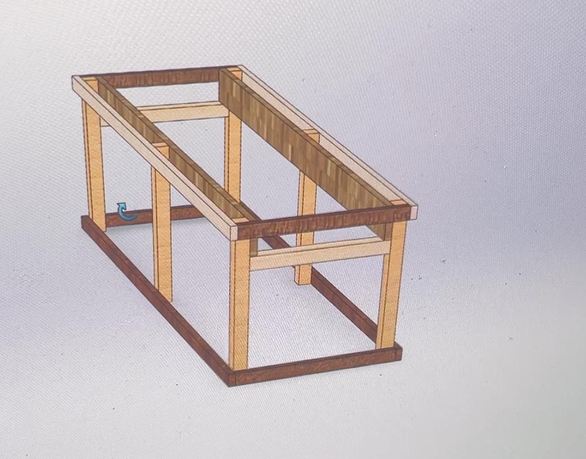

By Cole Rutkowski

A crack machine is a training device that emulates cracks in rocks, typically from finger fist sized. They are used to practice strength and technique for crack climbing outdoors. They can be built vertically, but the most common types are horizontal or angled, overhanging cracks. They can be made to have adjustable widths, multiple sizes, or just one size.
This was one of the simpler projects I did. Crack is back, but there aren’t many opportunities for overhanging crack training in the Front Range. So I took it upon myself to make a crack training machine. I made a sketch in my notebook with dismensions then made a simple frame model in Solidworks with the intention of using 2x4s, 2x12, wood screws, and timber bolts. I got some scrap 2x4s from a friend, bought a few 2x12s from Home Depot, and got to work. I cut the boards and screwed the frame together, then cut some 1”, 2”, and 3” spacers with scrap wood. I used the spacers to separate the 2x12s, which would be used as the cracks to jam. After everything was screwed in, I placed the timber bolts with nuts between each 2x12 crack at 3 foot intervals to minimize sag. Some weight tests confirmed that the crack machine was ready to go! The size of the cracks ranged from fingers to hand stacks, with slight expansion from jamming between each bolt. This was the perfect budget training machine (<$100) and is great for hangs, horizontal laps, and pullup training. I can use any range of size to train on, and use the wider cracks for feet while training my jamming techniques on each size. I also designed the frame to have space for a crashpad below, and there is room for me to add more cracks to the frame.
Solidworks Model
Hang Training